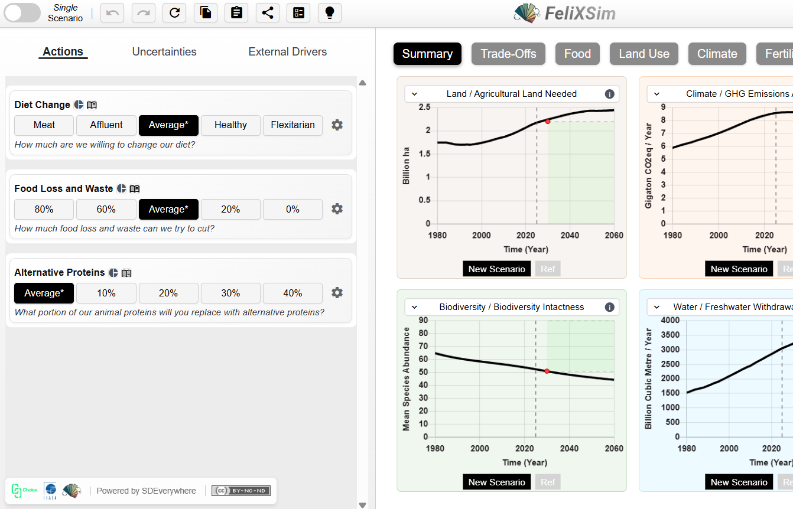
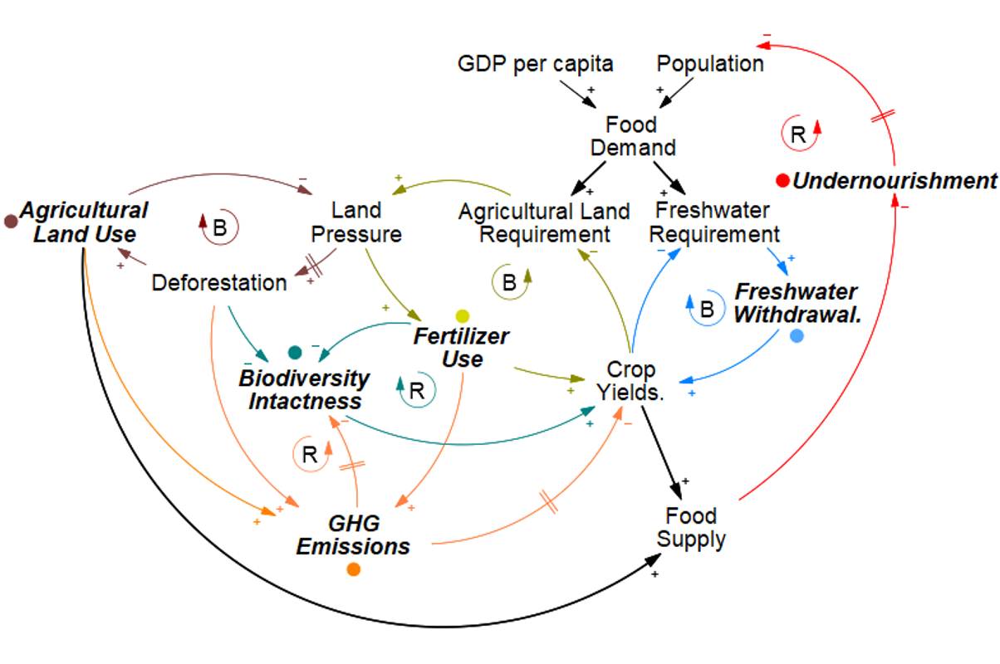
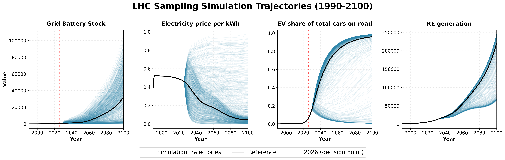

Software · FeliXFeliXSim
Web-based tool for food system behaviour change, built on the FeliX integrated assessment model. It is intended to make integrated assessment models accessible and engaging to non-experts.
Open Software →
WBF2026 · BiodiversityExploration of Structural Uncertainties in Food Systems
Exploratory modelling of feedback loops across social and environmental food systems using a lower-resolution model, including uncertain interactions often excluded from scenario analysis (e.g. ecosystem service feedbacks). Contributes to discussions on structural uncertainty and the implications of capturing more complete system representations in biodiversity and sustainability scenarios.
View Gallery →
EGU26 · EnergyPositive tipping cascades in the power system driven by adoption of grid-scale batteries
Global sensitivity analyses and scenario discovery were used to explore tipping dynamics in power-system transitions driven by grid-scale battery adoption.
View Gallery →